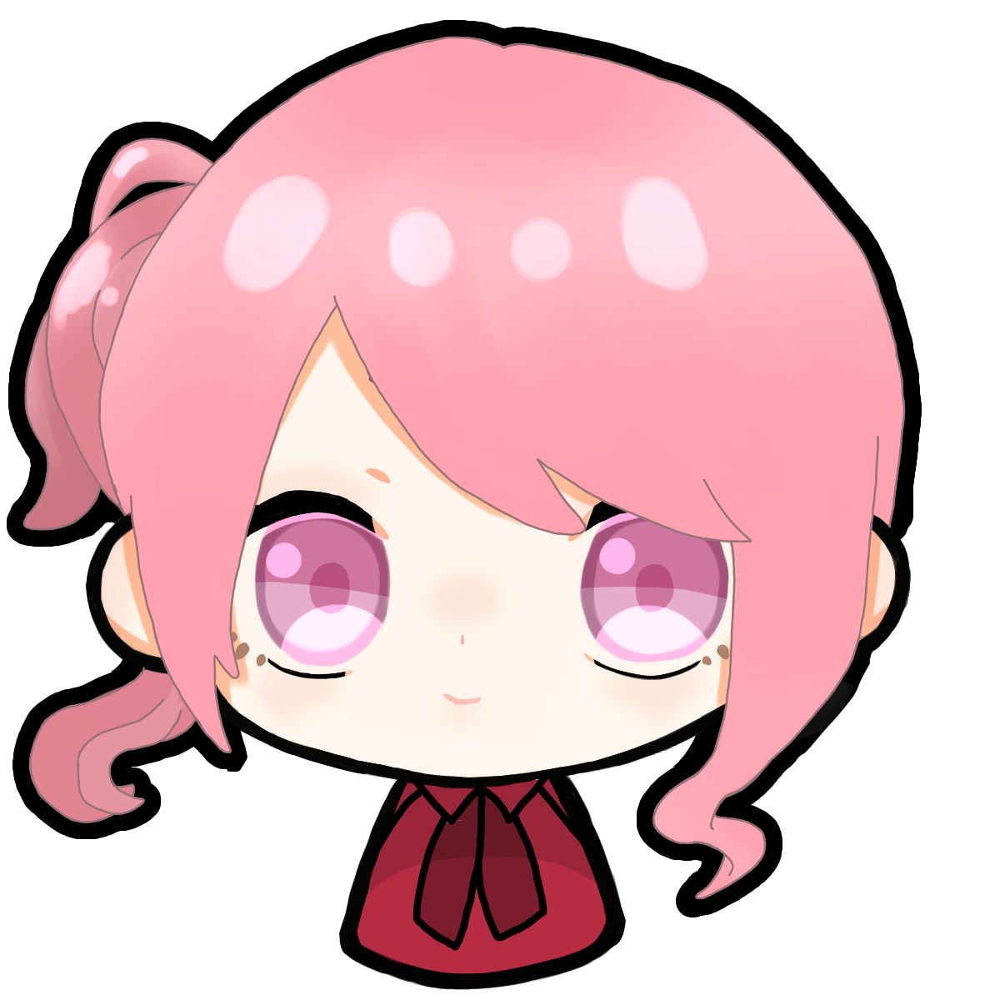

餅田ハジメ
一番社畜している人。
とりあえず始めてみた動画企画だが、
毎回編集でひぃひぃ言っている。
リーダー的ポジション。
おじいちゃん。
レゼル
餅田のボケにツッコミを入れる人。
歌ってるレゼルさんはかっこいいが、普段は可愛らしい。
ギャップがえぐい。
サブリーダー的ポジション。
おばあちゃん。
桔梗
決して主張が強いわけではないが、
なくてはならない人。
個性のかたまりであるメンバーの潤滑油。
お母さん。
湖上
あるはれの絵担当。
諸事情により動画には出ていないが、
縁の下の力持ち。
パート1の次回予告にて声出演。
お父さん。
りこりす
タンパク質の人。
黙々と作業をするのが好きなサポート役。
長女。

- ひつじ。
山崩しの人。
淑女かと思いきや
なかなかやばい人。
次女。
わたぬきらむち
山崩しの人。
淑女かと思いきや
なかなかやばい人。
次女。
まぁちゃ
ジャビアンの人。
タイミングが合わず動画ではまだ言葉数少ないが、
よく喋る人
三女。

リズノズ
謎の人。
声を発するのを頑なに断っているが、
戦闘狂。
長男。
ユッケ/ほっけ
爆発の人。
ネタの多さは随一で、
取れ高をかっさらっていく。
髪の毛にブチギレるお父さん。
ペット。